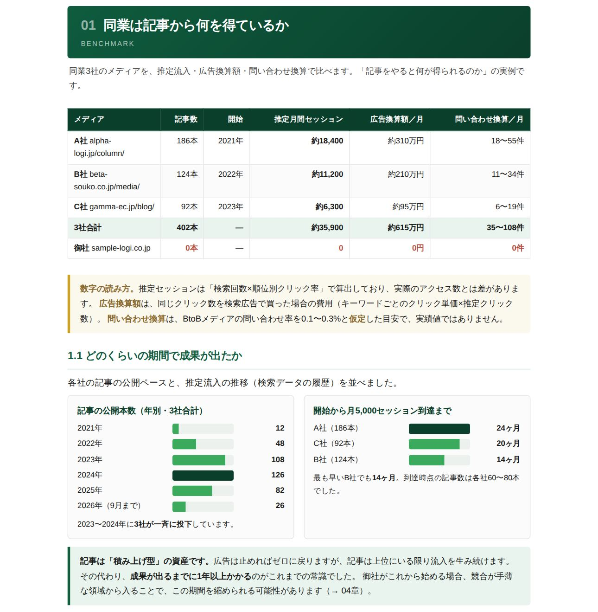
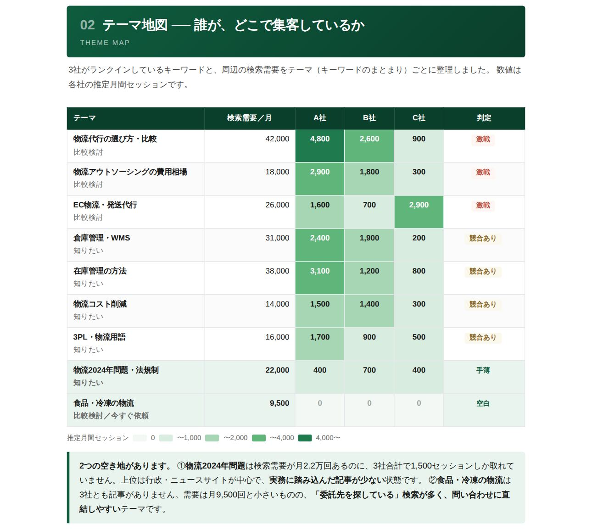
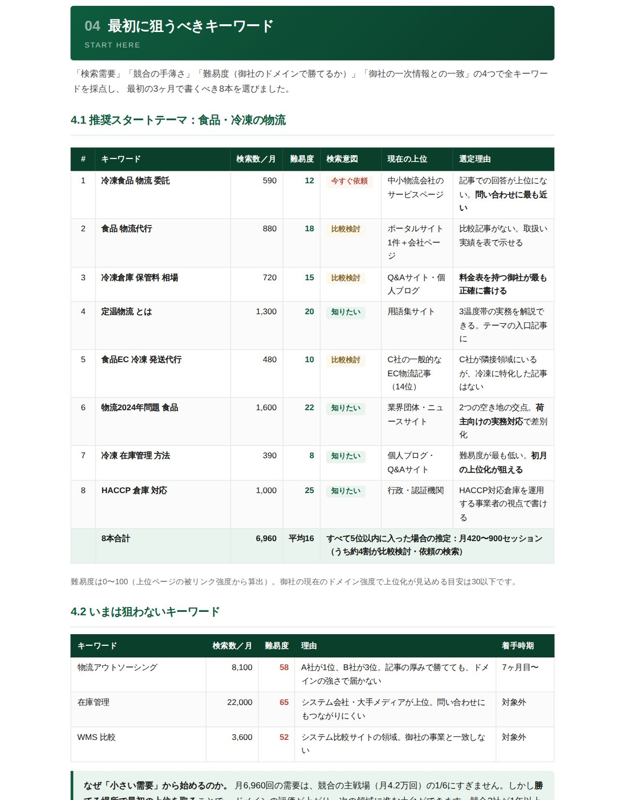
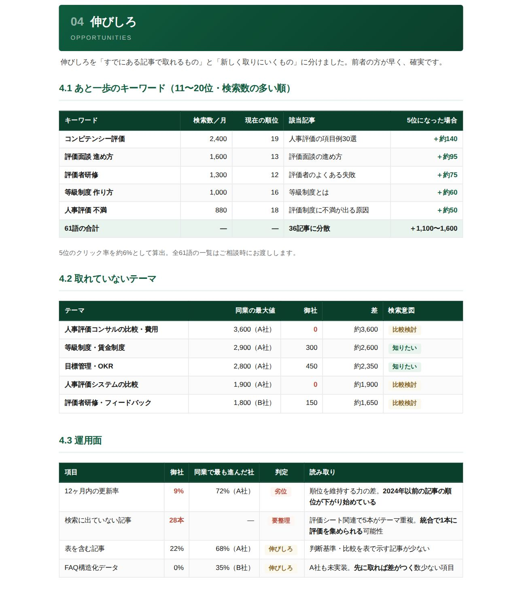

御社サイトのURLを入れるだけ。同業3社のオウンドメディアと比べて、
「どのテーマで、誰が、どれだけ集客しているか」を無料でレポートにします。
メディアをこれから始める会社にも、
運用中の会社にも。状況に合わせた診断をお届けします。
BtoB企業のオウンドメディアが、広告に頼らず問い合わせを生んでいる公開事例です。
※ いずれも他社の公開事例で、AIメディアくんの導入実績ではありません。同等の成果をお約束するものではありません。
出典：株式会社LANY「BtoBのコンテンツマーケティング成功事例9選」（2026年1月14日公開）。LANYの数値は2022年8月時点、ベイジは2020年時点。
広告は出稿をやめた瞬間に流入が止まります。上位にいる記事は、公開後も追加費用なく集客を続けます。
2位19%、3位12%、10位は1.5%。同じテーマでも、上位を誰が取っているかで集客は大きく変わります。
キーワードを単独で調べても、どこが激戦で、どこが空いているかは分かりません。同業の実績と並べることで判断できます。
出典：Keywordmap採用CTR（順位別クリック率）
同業は、どのテーマで集客しているのか。まずは御社の業界の地図を、無料で確認しませんか。
無料診断を申し込む1つでも当てはまるなら、無料診断で現状を確認してみてください。
同業の実績と並べれば、「やるべきか」「どこから直すか」が見えてきます。
御社と同業3社の検索データを同じ物差しで解析し、約10ページのレポートにまとめます。

同業3社の推定流入・広告換算額・問い合わせ換算。成果が出るまでにかかった期間も示します。
両方の診断
キーワードをテーマ単位でまとめ、どこが激戦で、どこが空いているかを1枚で示します。
両方の診断
需要・競合の手薄さ・難易度・御社の強みとの一致で採点。「いまは狙わないキーワード」と理由も添えます。
参入診断
あと一歩（11〜20位）のキーワード、取れていないテーマ、更新の状況から、効果の早い順に方向性を示します。
改善診断やる価値があるか、そしてどこから始めればいいかが分かります。
何が足りないか、そして何から直せばいいかが分かります。
どちらを選ぶ必要もありません。フォームで「メディアの状況」を選ぶだけで、適した診断をお届けします。
URLを入れてすぐ点数が出る診断ツールは便利です。この診断は、それとは別の問いに答えます。
| URL入力型の 即時診断ツール | SEO会社の 個別診断 | AIメディアくん 無料メディア診断 | |
|---|---|---|---|
| わかること | ○サイト内部の点数・改善項目 | ◎課題の抽出・改善提案 | ◎同業との比較・テーマ別の勝ち負け |
| 同業との比較 | △対象外のことが多い | ◎ | ◎事業が近い3社を選定 |
| メディアがない会社 | △評価する記事がない | ○ | ◎参入診断で対応 |
| 集客の金額換算 | — | ○ | ◎広告換算額で提示 |
| 届くまでの時間 | ◎数十秒〜数分 | △ヒアリング後・数日 | ○最短1営業日 |
| 申し込みの手間 | ◎登録不要のものが多い | △ヒアリングが必要 | ○フォーム入力 約1分 |
※ 各診断の一般的な傾向をまとめたもので、特定のサービスを評価するものではありません。すぐに点数を知りたい場合は、即時診断ツールも併せてご活用ください。
御社サイトのURLと、メディアの状況を選ぶだけ。
AIが同業3社を選んで解析し、担当者が1件ずつ内容を確認します。
Webで読めるレポートとPDFをメールでお送りします。
数字の読み方と、記事ごとの具体案をオンラインでご説明します。
入力は約1分。最短1営業日でレポートをお届けします。
ここからは、このレポートを作る「AIメディアくん」についてご紹介します。
AIメディアくんは、メディア戦略の設計からキーワード選定、執筆、図表、公開までを行う、BtoBメディアの構築・運用サービスです。
今回の診断は、AIメディアくんが導入時に行う「メディアプランニング」の最初の工程を、無料でお試しいただけるようにしたものです。
キーワードを単語の羅列ではなく、テーマの塊（クラスター）で設計します。優先度は検索数だけでなく、商用価値・実現可能性・AI検索での機会の3つで採点。今回の診断の「テーマ地図」は、この設計の入口です。
サイト・社内資料・数字を読み込み、足りない情報はAIが作る質問シートに沿った週2回・30分のヒアリングで補います。一般論ではなく、御社の判断や経験が入った記事をつくります。
1つのAIに全部やらせず、戦略設計からヒアリング設計、競合調査、執筆、図表、校正、品質評価までを13の工程に分け、それぞれ専門のAIが担当。合格ラインを下回った記事は自動で差し戻されます。
毎週テーマ案が届くので、ネタ切れで止まりません。公開済み記事の更新（リライト）もAIが行うため、記事が増えても運用が重くなりません。
診断で見えた「最初に狙うテーマ」から、実際に記事をつくるところまで。1ヶ月間、費用をかけずにお試しいただけます。
※ 適用条件・料金は、診断結果の解説の際にご案内します。診断のみのご利用も歓迎です。無料診断に関するご不安にお答えします。
はい、完全無料です。レポートの作成・お届け・30分の解説まで、費用は一切かかりません。
いいえ。診断だけのご利用も歓迎です。解説の際にAIメディアくんをご案内することはありますが、無理にお勧めすることはありません。
はい。コーポレートサイトのURLでお申し込みください。同業がどれだけ記事で集客しているか、御社が始めるならどこから入るべきかを「参入診断」としてお届けします。
御社の事業内容と検索データから、事業が近く、かつ記事で集客している会社をAIが選び、担当者が確認します。比較したい会社がある場合はフォームでご指定いただけます。大手ポータルやニュースサイトは対象外です。
流入数は検索データ（検索回数×順位ごとのクリック率）からの推定で、実際のアクセス数とは差があります。4社を同じ方法で推定しているため、比較の目安としてお使いください。解説の際に、Search Consoleと連携した実測ベースの精密版もご用意できます。
レポートでお届けするのは、現状・伸びしろ・方向性までです。「どの記事をどう直すか」「次に何を書くか」の具体案は、30分の解説の際に御社の状況を伺ったうえでお渡しします。
AIメディアくんは初月無料でお試しいただけます。料金は記事の本数やご支援の範囲によって異なるため、診断結果の解説の際に、御社に合った形でご案内します。
ご自身が所属する会社のサイトに限らせていただいています。メールアドレスのドメインと診断するサイトが異なる場合は、確認のためご連絡することがあります。制作会社・代理店の方は別途ご相談ください。
URLを入れるだけ。最短1営業日でレポートをお届けします。
無料で診断を申し込む